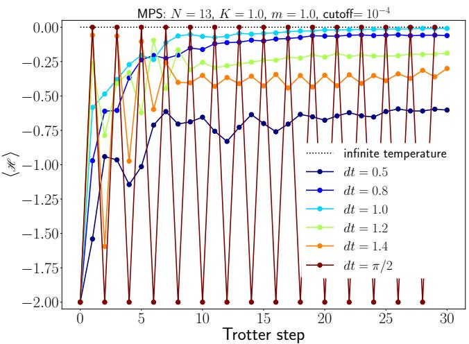
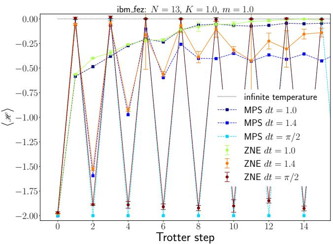
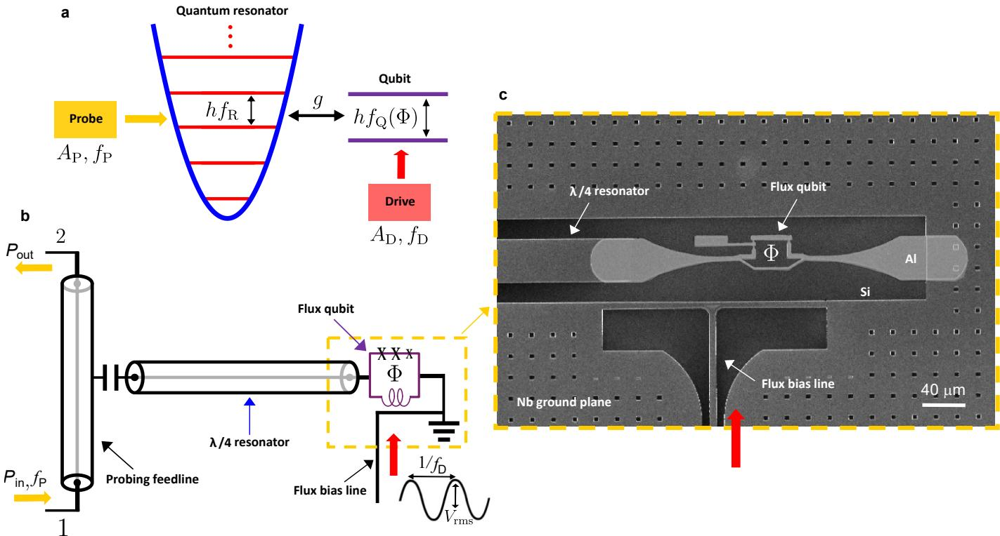
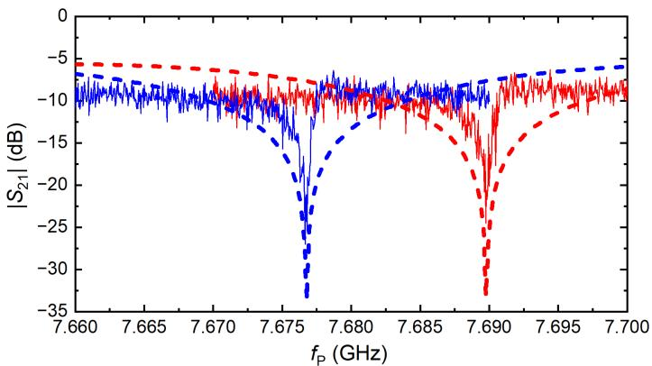
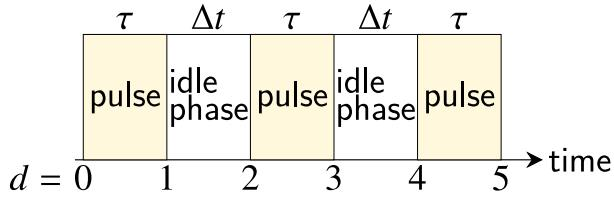
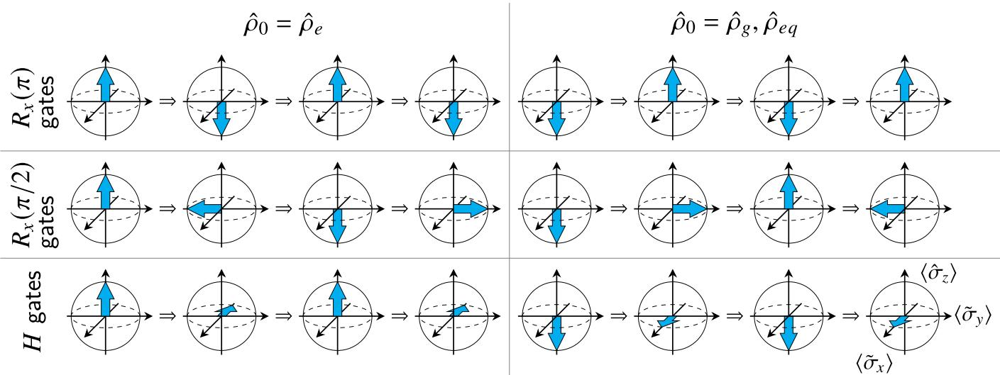
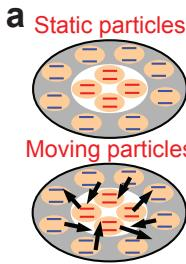
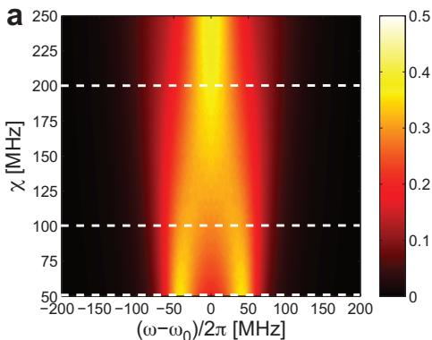

物理图像：把时间当晶格看
Floquet 理论（Floquet theory）处理的是形如 的周期哈密顿量（角频率 ）。对这种系统，薛定谔方程允许如下形式解：
是周期为 的 Floquet 态（Floquet state），对应常数 称为准能量（quasienergy）。它与固体物理中 Bloch 定理的结构完全类比：空间周期 准动量 对应于时间周期 准能量 。把 与态同时平移 （）并把 乘上 ，物理态 不变，因此 Floquet 谱天然按 划分成宽度为 的”布里渊区”，每个布里渊区内放一份独立的准能量谱副本。
物理上，每一份副本对应一组相差 个驱动光子的光子辅助边带。原能级在驱动下被复制成无穷多条相差整数倍 的”侧带”，它们相遇时耦合产生免交叉（avoided crossing）：在免交叉点附近，参与作用的两条 Floquet 态交换物理性质，准能量曲线被推开但平均能量精确相交。该图像在量子点电荷比特的LZSM 干涉中表现为条纹随驱动幅度 的非平凡周期调制；在耦合到腔的杂化系统中表现为腔辅助 LZSM 条纹与月牙形孔洞。
准能量、布里渊区与免交叉
把 Floquet 态做傅里叶展开 ，并把 视为扩展 Hilbert 空间（extended Hilbert space）——Sambe 空间——的”基矢展开系数”，即可把含时薛定谔方程改写为与时间无关的矩阵本征值问题
其中
是 Floquet 矩阵，本身无穷维；数值上做截断 ，迭代 直到相邻两次的 相对变化小于给定精度（例如 ）。在驱动双量子点这类小 Hilbert 空间问题中， 通常已足够。
求解得到准能量 ，把它们按 周期折叠到一个第一布里渊区（first Brillouin zone）内：。Floquet 谱形如固体能带：能带之间可以靠得很近但不真正相交，构成免交叉点。在免交叉处 Floquet 态交换物理性质，准能量与平均能量
的行为不同—— 受斥推开， 精确相交。这是 Floquet 态动力学中”准能量共振条件 “与”平均能量/布居条件 “分道扬镳的根源，也是后续”双共振 LZSM”与”月牙孔洞”等现象的能谱基础。
双量子点电荷比特的 Floquet 哈密顿量
把 Floquet 理论应用到门控双量子点（DQD）的电荷比特——即电荷比特——上时，可以给出”如何由器件参数算出 Floquet 矩阵”的标准示例。设 DQD 在 基矢下的含时哈密顿量为
这里 是失谐偏移量， 是驱动幅度， 是驱动角频率， 是点间隧穿耦合。把 Floquet 形式解 代入薛定谔方程，可得系数递推关系
按 顺序排列即得 Floquet 矩阵 的三对角块结构：对角块含 与 ，每个块通过 与左右邻块耦合，整体加上 的等差阶梯。截断后数值对角化即得 与 。
物理上，每一对 描述”电荷在 之一、并吸收了 个驱动光子”的态； 把它们与相邻光子数块耦合，于是 Floquet 边带直接显式地描述了光子辅助隧穿（photon-assisted tunneling）的多光子过程。同一套结构也适用于门控电压驱动或磁通驱动，只需把 替换为相应的含时失谐。
开放系统：Floquet-Bloch-Redfield 与稳态占据
实际的半导体量子点总会与声子库、电荷噪声库等环境耦合。Floquet 理论在封闭系统下只给出 的”骨架”；要把体系带到稳态并给出 Floquet 态占据概率 ，需要把 Bloch–Redfield 主方程推广到 Floquet 表象。（第 2.5.2 节、附录 4.C）采用 Floquet-Bloch-Redfield 理论：
- 以 Floquet 态 作为 Liouville 空间的基矢，写出非微扰 Liouvillian 的传播子 ；
- 在弱耗散近似（Markovian bath）下，Bloch–Redfield 张量 由环境关联函数的 Fourier 分量给出；
- 取长时间极限得到稳态 ：通常系统优先占据平均能量最低的 Floquet 态；但在准能量免交叉附近，两个 Floquet 态的混合系数 ，使系统从近纯态过渡到最大混合态。
开放系统框架下 Floquet 理论的几种常见近似之间的差别：
| 理论 | 近似条件 | 适用 |
|---|---|---|
| 纯 Floquet 定理 | 无耗散 | 理想封闭系统、谱学结构 |
| Floquet-Bloch-Redfield | 系统–库耦合弱（Born）、记忆短（Markov） | 半导体量子点典型条件 |
| Floquet-Lindblad | 时间局域主方程， 为定常 Floquet-Lindbladian | 高频驱动、近简并 |
| Floquet 速率方程 | Born–Oppenheimer 类，慢自由度近似 | 电荷隧穿主导 |
弱耗散意味着可以把 Bloch–Redfield 张量对环境关联函数做 Fourier 分量分解，并在每个 通道独立求和；这正是 附录 4.C 中给出的具体计算过程。
腔作为 Floquet 探针：相位平均磁化率
把电路量子电动力学（circuit QED，cQED）腔引入后，Floquet 态的占据、准能量差以及 Floquet 态–腔跃迁矩阵元都会进入可观测响应。受驱双量子点–腔杂化系统在色散区（探测频率 接近 ）的反射信号为
其中相位平均磁化率（phase-averaged susceptibility）
是 Floquet–腔耦合的核心可观测量。式子由三部分组成：
- 准能量共振条件 （ 整数）——保证分母为零；
- 占据差 ——保证 ；
- Floquet 矩阵元 的第 阶傅里叶分量——保证非零的”边带跃迁”。
由于 包含 这一占据因子，Floquet 态在免交叉附近的重分布会直接通过 反映到腔信号上。这是 Floquet 动力学之所以能”被腔读到”的根本机制。（第 4 章附录 4.B）给出了与之对应的透射公式
其中 是双量子点系统在 Floquet 表象下的响应函数， 描述腔线型偏差；二者均按 的形式对所有 Floquet 态对 与边带阶 求和（式 4.4）。同一框架的更一般版本把驱动–腔–量子点视作一个整体，由非平衡微扰理论（Kubo 型响应）给出 ，再代入输入输出边界得 ，。
双共振 LZSM 与 Floquet 态消耗
当两个共振条件同时满足——Floquet 态间跃迁共振条件 （）与腔辅助跃迁条件 （）——出现双共振（double resonance）：
（第 6 章）在半腔频 附近观察到：当 从 3.2 GHz 调到 3.5 GHz 时，原来的腔辅助 LZSM 条纹从中间劈裂，形成”月牙”形孔洞。物理根源是 Floquet 态占据：在 附近两个 Floquet 态相干相长、，于是 ，腔反射信号被抑制。月牙孔洞的位置随 平移，方向与 减小区域一致；改变 （SQUID 阵列电流调谐）破坏双共振条件则月牙消失。把 推到另一个满足 的位置，月牙又重现——这种”在/不在”的开关行为是 Floquet 态布居受共振条件调控的最直接证据。
把同样思路沿布里渊区推进，理论上 都应当出现高阶双共振条纹；但失谐量涨落 会把细窄的月牙抹平，使 腔频以下的图案退化为”蟹钳”形状。
Floquet 增益与粒子数反转
Floquet 框架下还预言了与”消耗”互补的另一类现象：在合适的参数下，受驱双量子点可以反过来向腔发射微波光子，使腔透射或反射幅值 ，称为 Floquet 增益（Floquet gain）。（第 4 章）报告的最大归一化增益约 ，对应 GaAs 双量子点–NbTiN 透射腔样品（，，）。
增益的 Floquet 图像是：把双量子点放在准能量布里渊区里看，相邻两个 Floquet 态 与 之间由于 GaAs 的电声耦合（piezoelectric electron-phonon coupling）出现非平衡占据——激发态占据超过基态，即等效粒子数反转（population inversion）；一旦它们的能级差 （）与腔频匹配 ，系统就会向腔发射一个腔光子。整个发射–损耗竞争由比值 量化：增益只在 足够大时出现。Stehlik 等人在早期 SQUID–双量子点样品（）中只能看到 的损耗条纹，看不到增益；把 推到约 才能观测到清晰增益。
增益对驱动频率 、隧穿耦合 、耦合强度 的依赖均可由 Floquet–输入输出公式给出： 在 区间 – 内先增后减，在 附近出现三个清晰可辨的增益区 G1/G2/G3。
多比特耦合系统的 Floquet 理论
当多个量子点共享同一个腔模（腔介导耦合）时，Floquet 理论要推广到”耦合系统作为整体”。（§5.4）给出适用于 个量子点共享一个腔模的框架：
- Hilbert 空间为 ，仅保留最低的 个腔光子态；
- 在最低激发数（ 或 光子）截断下，把每个量子点的 写成 Kronecker 积形式，得到 维的矩阵表示；
- 在驱动周期 下，把这个大矩阵写成 Floquet 矩阵 ，结构与单比特情形相同；
- 对该耦合系统做非平衡微扰理论（响应函数方法），把多比特耦合自然包含—— 现在涉及所有 Floquet 态对的 之和；
- 当两个量子点的驱动频率相同时，耦合系统仍以 为周期；若两个频率不可通约（incommensurable），则系统没有共同周期，需另行处理。
这套”耦合系统 Floquet 理论”是色散读出理论（色散读出）的推广：色散读出只考虑 的简单叠加，忽略了腔介导的量子点间相互作用；当 较大时该近似失效，新理论是更准确的替代。
Floquet 预热化：大步长 Trotter 电路的数字量子模拟
上文都是连续驱动的 Floquet 系统；另一支是数字版——把哈密顿量演化做一阶 Lie–Suzuki–Trotter 分解、并故意把步长 取得很大（周期 ）。步长超过阈值后 Trotter 误差不再有界、系统不再忠实模拟原哈密顿量，但它本身成为一个合法的 Floquet 系统，拥有自己的非平衡动力学。其普适图像是：
加热之前的漫长中间态即预热化（prethermalization）平台——观测量先驰豫到一个准稳平台、远晚于此才升到无限温值。这给含噪声中等规模器件指出一条实用路线：不需要忠实模拟哈密顿量，只需在预热化平台窗口内测量预热态。
Funo 等人在 IBM 156 比特超导器件 ibm_fez 上对一维 格点规范理论（费米子+规范场同时模拟、不按惯例用高斯约束消去规范场）演示了这条路线。经典 MPS 对照（）先定标：忠实模拟所需的 要 25–30 步以上才热化——对含噪声器件太难；把步长拉大后， 在 8–16 步出现无振荡的预热化平台、 在 8–25 步出现含振荡的平台。器件实验据此选平台窗口执行：配合误差缓解（含零噪声外推），38 与 116 比特的 Floquet 电路最多跑通 10 个 Trotter 步，成功到达预热化早期——为高能物理问题的量子模拟提供了基准。

经典 MPS 定标（N=13，K=m=1.0）：不同 Trotter 步长 dt 下的热化动力学——dt=0.5（忠实模拟）需 25–30 步以上才热化；dt=1.0 与 dt=1.4 分别在 8–16 与 8–25 步出现预热化平台（后者含振荡），为含噪声器件选出可执行的测量窗口。图源：Funo et al. (2024), Fig. 1。

ibm_fez 上的量子模拟（N=13 → 器件 38 比特）：配合误差缓解的 Floquet 电路最多执行 10 个 Trotter 步，观测量的演化进入预热化早期——与 MPS 定标的平台窗口一致；38/116 比特电路为格点规范理论数字模拟的规模基准。图源：Funo et al. (2024), Fig. 4。
适用边界：预热化窗口的长度随步长与模型参数变化，需经典可解极限先行定标；器件噪声深度（有效保真度×电路体积）决定可走的 Trotter 步数上限——步长加大换来的窗口要大到盖过这一上限才有实验意义。
参数与量级
半导体量子点 cQED 系统中 Floquet 实验的典型参数（取自本站论文中所列工作）：
| 参数 | 典型量级 | 来源 |
|---|---|---|
| 驱动频率 | –（远低于 ） | |
| 腔频 | （NbTiN 透射腔）、（SQUID 反射腔） | ； |
| 失谐偏移 | 扫描范围约 | |
| 驱动幅度 | 几到几十 （ 对应 ） | |
| 隧穿耦合 | – | ； |
| 电荷–腔耦合 | – | ； |
| 腔耗散 | （NbTiN）至 （SQUID） | ； |
| 比特退相干 | – | ； |
| Floquet 截断阶 | （收敛判据 ） | |
| 失谐涨落 | 几 （准静态电荷噪声） | ； |
| Floquet 增益峰值 $ | S_{21} | _{\max}$ |
| 增益临界 | （ 时增益清晰可测） | |
| 数字版预热化窗口（MPS 定标 N=13） | dt=1.0：8–16 步平台（无振荡）；dt=1.4：8–25 步（含振荡）；忠实模拟 dt=0.5 需 >25–30 步 | Funo 2024 |
| Z₂ 规范理论器件规模 | ibm_fez 156 比特；38/116 比特电路配合误差缓解最多 10 个 Trotter 步 | Funo 2024 |
实验特征与测量
Floquet 动力学实验有四个标志性的可观测特征：
- Floquet 谱条纹：扫描 与 （即 ），由色散读出得到的反射/透射幅值呈现沿 边界出现的干涉条纹——这是经典LZSM 干涉图样，在 Floquet 框架下被解释为准能量共振条件 时的”布居共振”。
- 月牙形孔洞（crescent holes）：在半腔频 附近的双共振条件下，每个 Floquet 谱条纹从中间劈开出现月牙。月牙位置、深度随 平移，随 改变而开关。这是 Floquet 态布居 的最直接图像证据。
- 腔幅值增益条纹（gain strips）：在 足够大的样品上，Floquet 态间电声耦合导致的等效粒子数反转使 区域出现——颜色变深的”热斑”。典型最大增益约 。
- 驱动频率依赖：固定其它参数扫 ，增益与月牙都会随 移动；这一可移动性是区分 Floquet 共振与简单电荷隧穿的关键。
标准测量线路：稀释制冷机混合腔室 （电子温度约几十至百 mK），矢量网络分析仪输出弱探测微波（，经约 衰减到达样品），通过射频反射或透射测量 、。数据拟合时把高斯卷积宽度 – 代入以反映准静态电荷噪声。
强驱动×强耦合：缀饰态谱的实验区

强驱动强耦合系统：量子谐振器强耦合到 flux qubit（弱耦合馈线探测）——磁通强驱动的缀饰态能级在透射谱中直接分辨。图源：Ivakhnenko et al. (2025)，Fig. 1。

实测透射谱 ：随驱动功率演化的谱线结构——缀饰态跃迁与多光子过程，Lindblad 主方程模拟定量吻合。图源：Ivakhnenko et al. (2025)，Fig. 2。
门操作的非马尔可夫极限：比特保真度提高后，环境的记忆效应成为精度的下一个瓶颈——门脉冲期间系统与环境的关联无法瞬时消散（马尔可夫假设失效），非马尔可夫修正进入门的误差预算。基于 Floquet 开放系统方法（词条的 Floquet-Bloch-Redfield 框架）可以系统计算这些修正，为高保真门给出精度极限的定量预测。

门操作的非马尔可夫效应：环境记忆进入门误差预算——Floquet 开放系统方法系统计算修正。图源：arXiv:2402.18518，Fig. 1。

非马尔可夫修正的量级：门保真度的预测 vs 实测——记忆效应在高保真区的可观测影响。图源：arXiv:2402.18518，Fig. 2。
随机驱动的对偶：运动平均与窄化
周期驱动（Floquet）之外，随机驱动给出对偶的谱学现象——运动平均（motional averaging）。NMR 中的原型：孔隙中两区域磁场不同的自旋粒子，静止时谱线劈裂为 、 两峰；当粒子在两区域间往返的时间 短于动力学阈值 时，粒子无法分辨两个能量——两峰合并为一条位于平均频率 的窄线（运动窄化）。相关的物理家族：Dyakonov–Perel 效应、Dicke 窄化、量子 Zeno 效应。


运动平均的实测谱：随机跳变速率快于动力学阈值时两条谱线合并为一条窄的运动平均线——边带与线形随跳变率的变化定量符合理论。图源：Li et al. (2013)，Fig. 2。
与其他概念的关系
- LZSM 干涉是 Floquet 理论的低阶表现：当只有一对准能量共振在起作用时，Floquet 形式解简化为两条态之间的 Stückelberg 相位积累与干涉。
- 光子辅助隧穿对应 Floquet 谱在 上的边带结构；多光子辅助过程就是 Floquet 矩阵中 块的耦合。
- Landau–Zener 跃迁是 Floquet 免交叉附近的瞬态图像；Floquet 理论则把它推广到稳态干涉与平均能量曲线。
- Jaynes–Cummings 模型描述无驱动二能级–腔耦合；含驱动时需要把 JC 模型换成 Floquet 化的耦合系统。
- 电路量子电动力学提供腔输入输出框架与色散响应公式；Floquet 动力学把这一框架的”时间依赖性”明确吸收进 Floquet 表象。
- 横向各向异性相互作用的 Floquet 工程：Floquet 方法的”相互作用合成”应用——蓝/红边带驱动把原生 JC 耦合改写为幅度与复相位独立的 XX/YY 任意配比，并用合成空间 AB 干涉校准整条链。
- 强耦合（）是 Floquet 态消耗与增益条纹能被分辨的实验前提； 的大小直接决定增益能否出现。
- 腔介导耦合系统中，Floquet 理论需要从单比特推广到耦合系统矩阵；色散读出近似忽略的量子点间相互作用此时进入 Floquet 响应函数。
- 色散读出给出 Floquet 动力学进入实验信号的具体公式（ 在 中的位置）。
参考文献
- Funo, K. et al. Floquet prethermalization of lattice gauge theory on superconducting qubits. arXiv:2408.10079 (2024)（QAtlas 缓存：2408.10079）。
- Chirolli, L., Polo, J., Catelani, G., Amico, L. Synthetic fractional flux quanta in a ring of superconducting qubits (2025). DOI: 10.1103/d3rk-kh1k；arXiv:2409.06511（QAtlas 缓存：2409.06511）——Floquet 方法的脉冲工程化分支（Leviton 协议给 hopping 加 Peierls 相位），见合成磁通与分数磁通量子词条。
完整文献库（含各篇站内全文页）见 参考文献库。